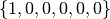

This example demonstrates exercising the elastic material model through a path of uniaxial strain. The example input below is found in matmodlab/examples/uniaxial_strain.py
from matmodlab import *
# Create the material point simulator
mps = MaterialPointSimulator('uniaxial_strain')
# Define the material
mps.Material('elastic', {'K': 1.35e11, 'G': 5.3e10})
# Define the strain step
mps.StrainStep(components=(1, 0, 0), scale=.02)
# Run the simulation
mps.run()
This section describes each part of the example script
from matmodlab import *
This statement makes the Matmodlab objects accessible to the script.
mps = MaterialPointSimulator('uniaxial_strain')
This statement creates a new material point simlator object named uniaxial_strain. The variable mps is assigned to the simulator.
mps.Material('elastic', {'K': 1.35e11, 'G': 5.3e10})
This statement defines the material model to be the elastic material and defines the bulk modulus K and shear modulus G to 1.35e11 and 5.3e10, respectively.
mps.StrainStep(components=(1, 0, 0), scale=.02)
This statement defines an analysis step during which the material will be exercised. The step is defined by a deformation path with tensor components . The xx, yy, and zz components represent strain. The scale of .02 is applied to each component.
mps.run()
This statement runs the material through the defined deformation path.